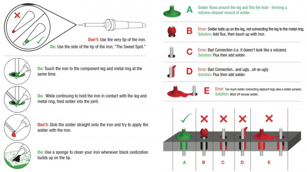

Soldering Tutorial¶
This is an abridged version of the excellent soldering tutorial from Sparkfun Electronics, they explain it better than we ever could. The full version is available at https://learn.sparkfun.com/tutorials/how-to-solder-through-hole-soldering however this version includes all the basic soldering knowledge you need to assemble OTIS.
In this tutorial we will go over the basics of through-hole soldering – also known as plated through-hole soldering (PTH). We will also discuss rework as it pertains to through-hole soldering and give you some tips and tricks that will make fixing any piece of electronics a breeze.
Soldering Irons¶
There are many tools that aid in soldering, but none are more important than the soldering iron. If nothing else, you need at least an iron and some solder to accomplish the task at hand. Soldering irons come in a variety of from factors and range from simple to complex, but they all function roughly the same. Here, we’ll discuss the parts of an iron and the different types of irons.
Here are the basic parts that make up a soldering iron.
Soldering Tips - No iron is complete without an iron tip. The tip is the part of the iron that heats up and allows solder to flow around the two components being joined. Although solder will stick to the tip when applied, a common misconception is that the tip transfers the solder. The tip actually transfers heat, raising the temperature of the metal components to the melting point of the solder, and the solder melts accordingly. Most irons give you the option to change your tip, should you need to replace an old tip or if you need to switch to a different style of tip. Tips come in a variety of sizes and shapes to accommodate any component.
Changing the tip is a simple process that consists of either unscrewing the wand or simply pushing in and pulling out the tip
Wand - The wand is the part of the iron that holds the tip. This is also the part that is handled by the user. Wands are usually made of a variety of insulating materials (such as rubber) to prevent the heat of the tip from transferring to the outside of the wand, but they also house wires and metal contacts that transfer heat from the base or outlet to the tip. This dual role of heating and preventing burns makes a high quality wand much appreciated.
Some irons consist of just a wand that plugs into a wall outlet. These irons are as simple as they come, and they do not have any controls to vary the temperature. In these irons, the heating element is built directly into the wand.
Base - The base of the soldering iron is the control box that allows the adjusting of temperatures. The wand attaches to the base and receives its heat from the electronics inside. There are analog bases, which have a dial that controls the temperature, and there are digital bases, which have buttons to set the temperature and a display that tells you the current temperature. Some bases even have extra features such as heat profiles that allow you to quickly change the amount of heat provided to the tip for soldering a variety of components.
Stand (Cradle) - The iron stand (often referred to as a cradle) is what houses the iron when it is not in use. The stand may seem trivial, but leaving an unattended iron laying around on your desk or workbench is a potential hazard: it could burn you, or, worse, it could burn your desk and start a fire. Again, they can be as simple as a metal stand, or they can be complex, offering an auto-shutoff feature that reduces the temperature of the tip when the wand is placed in the cradle. This helps prevent the wearing of your tip over time.
Soldering Accessories¶
Now that you know the ins and outs of a soldering iron, it’s time to discuss the other tools that will aid you on your soldering adventure.
Solder Wick - is the eraser to soldering’s pencil. When dealing with issues such as jumpers or the removal of parts (desoldering), solder wick comes in very handy. Solder wick – aka desoldering braid – is comprised of thin copper wire braided together. Solder is soaked (wicked) up by the copper allowing you to “erase” extra globs of solder.
Solder Vacuum (Solder Sucker) - is a great tool for removing solder left behind in through-holes when delsodering components. We’ll go over how to use this tool a little later in the tutorial.
Flush/Side Cutters - Giving you a way to cut leads very cleanly and close to the solder joint. Diagonal cutters are good, but if you really need to get up close and personal, flush cutters are the way to go.
Soldering Your First Component¶
Let’s put all these tools into action. This first video will go over the basics of soldering your first component – headers!
It’s really that easy! Follow Dave’s simple rules to make every solder connection a good one.
Be cautious when handling hot irons
Use third hands or vices to hold boards while you solder
Set your iron at a good medium heat (325-375 degrees C)
If you see smoke coming from your solder, turn down the heat
Tin your tip with solder before each connection to help prep the joint
Use the side of the tip (aka the sweet spot), not the very tip of the iron
Heat both the pad and the part you want to solder evenly and at the same time
Pull the solder away, then the iron
A good solder joint should look like a volcano or Hersey kiss, not a ball or clump
We’ve also put together this digram to help you better understand what makes a good solder joint.
When you are finished, tin the tip to increase its life before turning your soldering iron off.
Advanced Techniques and Troubleshooting¶
Once you get the basics of creating good solder joints, it’s time to learn some of the more advanced PTH techniques that you can utilize. This video goes over using flux, removing solder jumpers, desoldering components, along with some other tips and tricks.
Here are some other tips for PTH soldering:
Desoldering can often be the best way to learn how to solder. There are many reasons to desolder a part: repair, upgrade, salvage, etc. Many of the techniques used in the video aid in the desoldering process.
There is another method of removing solder from through-holes that we refer to as the slap method.
If you’re ever unsure if the solder joint you created is making an electrical connection, you can use a multimeter to test for continuity.
Content licensed under CC-BY-SA 4.0 © Sparkfun Electronics